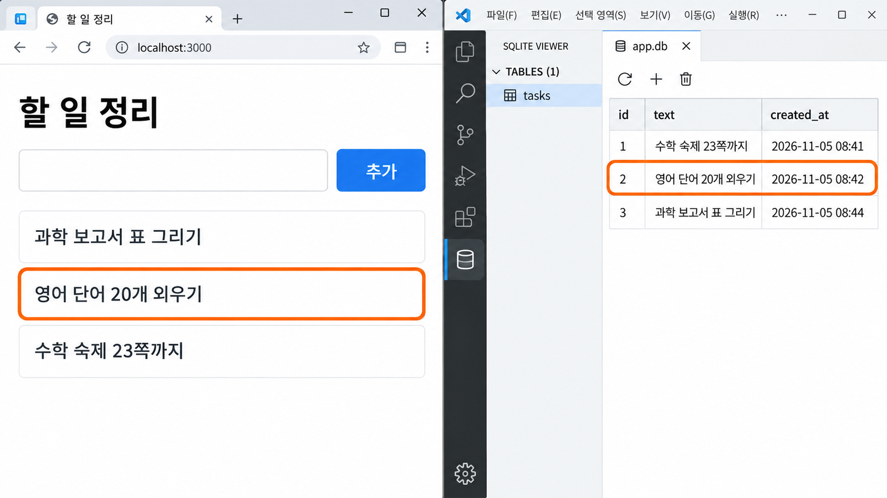

AI와 API·저장
연결하기与 AI 一起
接上 API 与保存
내 서비스의 버튼 하나가 다시 켜도 기억하게 합니다.先让 AI 讲计划，再写代码，
让自己服务的一个按钮重新打开也能记住。
오늘 끝나면 내 버튼 하나가 답하고, 기억한다今天结束时，自己的一个按钮会作答，也会记住
10-1에서 예시 「할 일 정리」가 요청을 보내고, SQLite에 저장하고, 다시 불러오는 것을 봤습니다. 오늘은 그 자리에 내 서비스의 핵심 행동을 넣습니다. 고치는 일은 AI가 하지만, AI가 내 약속과 다르게 만들면 알아챌 사람은 나뿐입니다. 그래서 오늘도 한 번에 시키지 않고 단계를 나눕니다.10-1 看到了示例“할 일 정리”（待办整理）发出请求、存进 SQLite、再读回来。今天在那个位置放进自己服务的核心动作。改的事由 AI 来做，但 AI 做得和约定不一样时，能发现的只有我。所以今天也不一次全交给它，而是分步骤来。
| 단계步骤 | AI가 하는 일AI 做的事 | 내가 확인하는 것我要确认的 |
|---|---|---|
| ①① | docs를 읽고 API·저장 계획을 설명한다读 docs，说明 API·保存计划 | 약속표 · 계획의 표와 맞는가是否符合约定表 · 计划里的表 |
| ②② | 「진행해」를 받고 코드를 고친다收到“开始吧”后改代码 | 정상 입력과 잘못된 입력에서 화면이 약속대로 바뀌는가正常输入和错误输入时，画面是否按约定变化 |
| ③③ | —— | 화면 · SQLite Viewer · 껐다 켜기 세 번 확인画面 · SQLite Viewer · 关了再开，确认三次 |
| ④④ | 달라진 곳의 가장 작은 수정을 제안한다对出偏差的地方提出最小的修改 | 같은 값으로 다시 해서 고쳐졌는가用同样的值再做一遍，是否改好了 |
터미널 두 개로 시작한다 — 실행용과 OpenCode용用两个终端开始 — 一个运行，一个给 OpenCode 실습实践
오늘은 서비스를 켜 둔 채로 AI와 이야기합니다. 서비스를 켠 터미널은 계속 일하고 있어서 거기에 다른 명령을 칠 수 없습니다. 그래서 터미널을 하나 더 엽니다. 두 터미널이 무엇을 하는지 구분해 두면 오늘 막히는 일이 절반으로 줄어듭니다.今天要在服务开着的状态下和 AI 对话。开着服务的终端一直在工作，没法在里面输入别的命令。所以再开一个终端。分清两个终端各做什么，今天卡住的情况就能少一半。
- VS Code에서
10폴더를 연다. 탐색기 맨 위에10,docs안에 파일 다섯 개와mockup폴더가 있는지 본다.在 VS Code 里打开10文件夹。看资源管理器最上面是不是10，docs里有没有五个文件和mockup文件夹。 - 터미널 ①:
npm run dev→ 브라우저에서localhost:3000을 열어 예시 「할 일 정리」가 보이는지 본다.终端 ①：npm run dev→ 在浏览器打开localhost:3000，看示例“할 일 정리”是否出现。 - 터미널 오른쪽 위의 +를 눌러 터미널 ②를 연다. 줄 끝이
…\10>인지 본다.点终端右上角的 +，打开终端 ②。看行末是不是…\10>。 - 터미널 ②:
opencode를 켠다.终端 ②：打开opencode。 docs\10_api_promise.md의 1항과 3항이 10-1에서 채워져 있는지 본다. 비어 있으면 지금 3분 안에 채운다.看docs\10_api_promise.md的第 1 项和第 3 项在 10-1 是否已经填好。空着的话，现在花 3 分钟填上。
아직 아무것도 고치지 않았는데 안 열리면 환경 문제입니다. AI에게 고치게 하지 말고 손을 듭니다. 10-1의 「막힐 때」를 먼저 봅니다.还什么都没改就打不开，那是环境问题。不要让 AI 去改，举手。先看 10-1 的“卡住时”。
요청 ① 코드보다 계획을 먼저 설명하게 한다请求 ① 让 AI 先讲计划，再写代码 핵심核心
첫 요청은 아무 파일도 고치지 않게 하고, API와 저장을 어떻게 연결할지만 설명하게 합니다. 빈칸 세 개는 약속표 1·3항과 개발 계획 3항에서 옮겨 적습니다. 요청문을 복사해 OpenCode 입력칸에 붙인 뒤, 빈칸 ___을 내 서비스의 말로 바꿔서 보냅니다.第一个请求不让它改任何文件，只让它说明怎样接上 API 和保存。三个空格从约定表第 1·3 项和开发计划第 3 项里抄过来。把请求复制粘贴到 OpenCode 输入框，把空格 ___ 换成自己服务的说法后再发送。
docs 폴더의 00_course_rules.md, PRD.md, 09_development_plan.md, 10_api_promise.md를 읽어 줘. docs/mockup은 화면 모양을 참고만 해. 아직 어떤 파일도 고치지 마. 지금 들어 있는 예시 「할 일 정리」를 본보기로, 내 서비스의 핵심 행동 하나를 API와 SQLite 저장으로 연결할 계획을 설명해 줘. - 핵심 행동: ___ - 저장할 핵심 기록: ___ - 기록을 다시 보는 곳: ___ 코드 대신 다음을 한 줄씩 쉽게 설명해 줘. 1. 어떤 화면 행동이 요청을 보내는지 2. 저장하는 요청과 다시 불러오는 요청의 주소와 방법(GET/POST) 3. 보낼 데이터와 성공·실패 응답 4. 표 이름과 열 이름 (09_development_plan.md 3항 아래 「기억할 기록과 표」와 같게) 5. 응답 뒤 화면이 어떻게 바뀌고, 저장된 기록이 어디에 다시 보이는지 6. 고칠 파일과 각 파일의 역할 로그인·파일 올리기·디자인 바꾸기·다른 기능은 아직 넣지 마. 11회에 한다.
请读 docs 文件夹里的 00_course_rules.md、PRD.md、09_development_plan.md、10_api_promise.md。 docs/mockup 只参考画面样子。现在还不要改任何文件。 以现在放着的示例“할 일 정리”（待办整理）为样板， 说明把我服务的一个核心动作接成 API 和 SQLite 保存的计划。 - 核心动作：___ - 要保存的核心记录：___ - 再次查看记录的地方：___ 不要写代码，请把下面几项一行一行用简单的话说明。 1. 哪个画面动作发出请求 2. 保存的请求和重新读取的请求，各自的地址和方法（GET/POST） 3. 发送的数据，以及成功·失败的响应 4. 表名和列名（和 09_development_plan.md 第 3 项下面的“기억할 기록과 표”一样） 5. 响应之后画面怎么变化，保存的记录在哪里再次显示 6. 要改的文件，以及每个文件的作用 登录、上传文件、改设计、其他功能现在都不要加。第 11 次课再做。
AI의 계획을 약속표 · 계획의 표와 한 줄씩 대 본다把 AI 的计划和约定表 · 计划里的表一行一行对照
AI가 여섯 줄을 설명하면, 진행하라고 하기 전에 아래 질문으로 확인합니다. 하나라도 「아니요」면 그 줄만 다시 묻습니다. 모두 「예」이면 AI가 제안한 요청 주소와 방법을 10_api_promise.md의 1·3항 빈칸에 내가 직접 적습니다.AI 说明完六行后，在让它开始之前，用下面的问题确认。只要有一个“否”，就只追问那一行。全部“是”的话，就把 AI 提出的请求地址和方法亲手填进 10_api_promise.md 第 1·3 项的空格。
| 확인할 것要确认的 | 아니요라면如果是“否” |
|---|---|
| 요청을 보내는 행동이 9회 흐름의 그 단계와 같은가?发出请求的动作，和第 9 次课流程里的那一步一样吗？ | 「핵심 행동은 ___이야. 그 버튼으로 다시 설명해 줘」“核心动作是 ___。请按那个按钮重新说明” |
| 표 이름과 열 이름이 계획 3항 「기억할 기록과 표」와 같은가?表名和列名，和计划第 3 项的“기억할 기록과 표”一样吗？ | 「열은 ___ · ___ · ___로 맞춰 다시 설명해 줘」“列请按 ___ · ___ · ___ 改好再说明” |
| 보내는 데이터가 핵심 기능에 필요한 것뿐인가? 이름 · 연락처 같은 개인정보가 없는가?发送的数据只有核心功能需要的吗？没有姓名、联系方式这类个人信息吗？ | 「___은 빼고 다시 설명해 줘」“去掉 ___ 再说明一遍” |
| 실패 응답이 무엇을 고칠지 알려 주는가?失败响应会告诉用户要改什么吗？ | 「실패하면 ___라고 안내하게 해 줘」“失败时请提示 ___” |
고칠 파일이 app 안의 화면 · API와 lib/db.js뿐인가?要改的文件只有 app 里的画面 · API 和 lib/db.js 吗？ | 「package.json은 고치지 마. 로그인 같은 다른 기능은 11회에 해」“不要改 package.json。登录这类其他功能第 11 次课再做” |
저장하는 요청과 다시 불러오는 요청의 주소 · 방법, 그리고 표 이름을 짝에게 내 말로 말해 봅니다. 말이 막히면 「___이 무슨 뜻인지 쉽게 다시 설명해 줘」를 보냅니다.把保存的请求和重新读取的请求各自的地址 · 方法，还有表名，用自己的话讲给同桌听。说不下去，就发“请用简单的话再解释一下 ___ 是什么意思”。
요청 ② 「진행해」 — 그리고 직접 눌러 본다请求 ② “开始吧” — 然后亲手按一下 실습实践
계획이 맞으면 아래 요청을 보냅니다. AI가 파일을 고치는 동안 기다리고, 끝나면 무엇을 바꿨는지 대화창에서 읽습니다. 서비스는 터미널 ①에서 계속 켜져 있어서, 고친 내용이 브라우저에 저절로 반영됩니다. 이제 내 손으로 눌러 봅니다.计划对了，就发下面的请求。AI 改文件时等着，改完后在对话框里读它改了什么。服务在终端 ① 里一直开着，改动会自动反映到浏览器上。现在亲手按一下。
진행해. 방금 설명한 계획대로 고쳐 줘. 사용자가 입력한 값은 SQL 문장에 바로 이어 붙이지 말고 ? 자리로 넣어 줘. 다 고치면 고친 파일 이름과, 내가 화면에서 확인할 행동 두 가지(정상 입력 · 잘못된 입력)를 알려 줘.
진행해（开始改吧）。
按刚才说明的计划修改。用户输入的值不要直接拼进 SQL 语句，要用 ? 占位符放进去。
改完后告诉我改了哪些文件，以及我要在画面上确认的两个动作（正常输入 · 错误输入）。- 브라우저에서
localhost:3000을 새로고침한다. 예시 대신 내 서비스 화면이 보이는가?在浏览器里刷新localhost:3000。看到的是自己服务的画面，而不是示例了吗？ - 정상 입력으로 핵심 행동을 한다. 9회 흐름의 다음 단계 화면이 나오는가?用正常输入做核心动作。出现第 9 次课流程里下一步的画面了吗？
- 잘못된 입력(빈칸 등)으로 같은 행동을 한다. 예외 흐름의 안내가 나오는가?用错误输入（空着等）做同样的动作。出现例外流程的提示了吗？
「test」나 「ㅁㄴㅇ」 같은 값은 뒤에서 SQLite Viewer와 대 볼 때 구별하기 어렵습니다. 내 서비스를 실제로 쓰는 사용자처럼 값을 넣습니다.“test”或乱打的字，之后在 SQLite Viewer 里对照时很难分辨。要像真正使用这个服务的用户那样输入。
본 것을 약속표 2항에 적는다把看到的写进约定表第 2 项 (이어서)（续）
방금 두 번 눌러 본 결과를 10_api_promise.md의 2. 실행해 본 결과에 적습니다. 보낸 데이터와 화면에 보인 것은 내가 직접 본 대로 씁니다. 받은 응답은 AI에게 물어봐도 됩니다. 이 표는 12회 테스트 기록의 연습입니다.把刚才按两次的结果写进 10_api_promise.md 的 2. 실행해 본 결과（试运行的结果）。发送的数据和画面上看到的，照自己亲眼看到的写。收到的响应可以问 AI。这张表是第 12 次课测试记录的练习。
| 시도尝试 | 보낸 데이터发送的数据 | 받은 응답收到的响应 | 화면에 보인 것画面上看到的 |
|---|---|---|---|
| 정상 입력 (예)正常输入（例） | 할 일: 과학 보고서 표 그리기待办：科学报告画表 | ok: true, 추가했습니다.ok: true，已添加。 | 목록 맨 위에 「과학 보고서 표 그리기」列表最上面出现“科学报告画表” |
| 잘못된 입력 (예)错误输入（例） | 할 일: (빈칸)待办：（空） | ok: false, 할 일을 입력하세요.ok: false，请输入待办。 | 주황 상자에 안내 · 목록은 그대로橙色框里显示提示 · 列表不变 |
브라우저에서 F12를 누르고 네트워크 탭을 연 뒤 버튼을 누르면, 요청 하나가 줄로 생깁니다. 그 줄을 누르면 응답의 JSON이 보입니다. 필수는 아닙니다.在浏览器里按 F12，打开 네트워크（网络）标签再按按钮，会多出一行请求。点这一行就能看到响应的 JSON。这一步不是必须的。
AI가 고친 파일에서 세 곳만 찾아 읽는다在 AI 改过的文件里，只找三个地方读 핵심核心
화면에서 눌러 봤으면, 바뀐 파일에서 세 곳만 찾아봅니다. 코드 전체를 읽지 않아도 됩니다. 표를 만드는 줄, 저장하는 줄, 다시 불러오는 줄이 어느 파일에 있는지 알면, 나중에 문제가 생겼을 때 AI에게 정확히 말할 수 있습니다.在画面上按过之后，在改过的文件里只找三个地方。不用读完整段代码。只要知道建表的行、保存的行、重新读取的行分别在哪个文件里，以后出了问题就能准确告诉 AI。
| 찾을 글자要找的字 | 어느 파일에在哪个文件 | 하는 일做什么 |
|---|---|---|
CREATE TABLECREATE TABLE | lib/db.jslib/db.js | 표가 없으면 만든다. 괄호 안이 열 이름이다没有表就建表。括号里是列名 |
INSERTINSERT | app/api/…/route.jsapp/api/…/route.js | 저장하기 — 새 행을 적는다保存 — 写入新的一行 |
SELECTSELECT | app/api/…/route.jsapp/api/…/route.js | 다시 불러오기 — 쌓인 행을 읽어 온다重新读取 — 读回已存的行 |
- AI가 알려 준 파일을 탐색기에서 연다.在资源管理器里打开 AI 说的文件。
Ctrl+F로CREATE TABLE,INSERT,SELECT를 하나씩 검색한다.用Ctrl+F逐个搜索CREATE TABLE、INSERT、SELECT。CREATE TABLE줄의 표 이름과 열 이름이 계획 3항 「기억할 기록과 표」와 같은지 본다.看CREATE TABLE那行的表名和列名，是否和计划第 3 项的“기억할 기록과 표”一样。
AI가 고친 파일에서 세 곳만 찾아 읽는다在 AI 改过的文件里，只找三个地方读 (이어서)（续）
예시 「할 일 정리」라면 세 곳은 아래처럼 보입니다. 내 서비스는 표 이름과 열 이름이 다르겠지만 모양은 비슷합니다. 문법을 해석하지 말고 표 이름, 열 이름, 그리고 ? 자리가 있는지만 봅니다.示例“할 일 정리”的话，这三个地方像下面这样。自己服务的表名和列名会不同，但样子差不多。不用解读语法，只看表名、列名，还有有没有 ? 占位符。
CREATE TABLE IF NOT EXISTS tasks (
id INTEGER PRIMARY KEY AUTOINCREMENT,
text TEXT NOT NULL,
created_at TEXT DEFAULT (datetime('now', 'localtime'))
)CREATE TABLE IF NOT EXISTS tasks (
id INTEGER PRIMARY KEY AUTOINCREMENT,
text TEXT NOT NULL,
created_at TEXT DEFAULT (datetime('now', 'localtime'))
)getDb().prepare("INSERT INTO tasks (text) VALUES (?)").run(text);
getDb().prepare("SELECT * FROM tasks ORDER BY id DESC").all();getDb().prepare("INSERT INTO tasks (text) VALUES (?)").run(text);
getDb().prepare("SELECT * FROM tasks ORDER BY id DESC").all();tasks표에text열을 적는다往tasks表写入text列- 값은
?자리로 따로 넘긴다值通过?占位符单独传入 tasks의 행을 새것부터 모두 읽어 온다把tasks的行从新到旧全部读回
- 계획에 없던 표 이름이나 열计划里没有的表名或列
INSERT가 들어간 예시 기록 여러 줄带INSERT的好几行示例记录- 설명 없이 설치한 새 패키지没说明就装上的新包
① 화면 · ② SQLite Viewer에서 같은 기록을 찾는다① 画面 · ② 在 SQLite Viewer 里找到同一条记录 실습实践
저장이 됐다고 말하려면 세 번 확인합니다. 첫째는 화면입니다. 기록이 다시 보이는 자리까지 따라가 봅니다. 둘째는 파일입니다. 저장하는 순간 data 폴더의 app.db에 행이 적히므로, 10-1에서 설치한 SQLite Viewer로 열어 같은 값을 찾습니다.要说保存成功了，得确认三次。第一次是画面：一直跟到记录再次显示的位置。第二次是文件：保存的那一刻，行会写进 data 文件夹里的 app.db，用 10-1 安装的 SQLite Viewer 打开，找到同样的值。
- 방금 정상 입력으로 남긴 값이 내 흐름에서 기록을 다시 보는 자리(목록 · 최근 기록 등)에 나타나는지 본다.看刚才用正常输入留下的值，有没有出现在我的流程里再次查看记录的位置（列表 · 最近记录等）。
F5로 새로고침해도 그대로 있는지 본다. 잘못된 입력 뒤에는 기록이 늘지 않았는지 본다.按F5刷新后看是否还在。看错误输入之后，记录有没有增加。
- VS Code 탐색기에서
data폴더를 펼치고app.db를 누른다.在 VS Code 资源管理器里展开data文件夹，点app.db。 - 왼쪽에서 내 표 이름을 누른다. 방금 남긴 값이 행으로 있는지, 행의 개수가 남긴 횟수와 같은지 본다.在左边点自己的表名。看刚才留下的值有没有成为一行，行数和留下的次数是否一样。
Win+←·Win+→로 브라우저와 VS Code를 나란히 놓고 값을 한 줄씩 대 본다.用Win+←·Win+→把浏览器和 VS Code 并排，逐行对照值。
tasks는 예시 「할 일 정리」가 남긴 표입니다. 지우지 않고 그대로 둡니다. 확인할 때는 내 표만 봅니다. Viewer에서는 행을 고치거나 지우지 않습니다.tasks 是示例“할 일 정리”留下的表。不要删，原样放着。确认时只看自己的表。在 Viewer 里不改也不删行。
① 화면 · ② SQLite Viewer에서 같은 기록을 찾는다① 画面 · ② 在 SQLite Viewer 里找到同一条记录 (이어서)（续）
아래 화면은 예시 「할 일 정리」를 나란히 놓은 모습입니다. 왼쪽 브라우저의 한 줄과 오른쪽 Viewer의 한 행이 같은 값이면 저장이 제대로 된 것입니다. 내 서비스도 같은 방법으로 대 보고, 아래 질문에 답합니다.下面的画面是把示例“할 일 정리”并排放着的样子。左边浏览器的一行和右边 Viewer 的一行值相同，就说明保存成功了。自己的服务也用同样的方法对照，并回答下面的问题。

- 화면에서 남긴 값이 같은 글자로 내 표의 한 행에 있는가?画面上留下的值，是否以同样的文字存在自己表的一行里？
- 계획에 없던 열이나 이름 · 연락처 같은 개인정보가 적히지 않았는가?有没有写进计划外的列，或姓名、联系方式这类个人信息？
- 내가 남기지 않은 예시 행이 내 표에 미리 들어 있지 않은가?自己的表里有没有预先放进我没留下的示例行？
③ 서버를 껐다 켜도 기록이 남는지 본다③ 看看关掉服务器再打开，记录还在不在 실습实践
세 번째 확인이 「기억한다」의 증거입니다. 새로고침은 화면만 다시 그리지만, Ctrl+C로 서버를 멈추면 실행 중에 들고 있던 것이 모두 사라집니다. 그런데도 기록이 남아 있다면 그 기록은 app.db 파일에서 다시 읽어 온 것입니다.第三次确认是“记住了”的证据。刷新只是把画面重画一遍，而用 Ctrl+C 停掉服务器，运行中拿着的东西会全部消失。即使这样记录还在，就说明它是从 app.db 文件里重新读回来的。
- 터미널 ①을 누르고
Ctrl+C를 누른다. 「일괄 작업을 끝내시겠습니까 (Y/N)?」가 보이면Y와 Enter.点终端 ①，按Ctrl+C。如果出现“일괄 작업을 끝내시겠습니까 (Y/N)?”（要终止批处理操作吗），就按Y和 Enter。 - 줄 끝에
…\10>가 다시 보이면 서버가 멈춘 것이다.npm run dev를 다시 입력하고Ready를 기다린다.行末重新出现…\10>，说明服务器停了。重新输入npm run dev，等出现Ready。 - 브라우저 탭을 닫고 새 탭에서
localhost:3000을 연다. 다시 보는 자리에 기록이 그대로 있는지 본다.关掉浏览器标签页，在新标签页打开localhost:3000。看再次查看的位置，记录是否原样还在。
| 약속표 4항 · 세 번 확인约定表第 4 项 · 确认三次 | 본 것 (예: 할 일 정리)看到的（例：待办整理） |
|---|---|
| 화면画面 | 목록 맨 위에 「과학 보고서 표 그리기」列表最上面是“科学报告画表” |
| SQLite ViewerSQLite Viewer | 내 표 3행 · text = 과학 보고서 표 그리기自己表的第 3 行 · text = 科学报告画表 |
| 껐다 켜기关了再开 | 새 탭에서도 목록에 그대로 있다新标签页里列表上也还在 |
내 버튼 하나가 요청을 보내고, 기록을 남기고, 다시 켜도 그 기록을 보여 줍니다. 약속표 4항에 본 것과 판정을 적습니다.自己的一个按钮会发出请求、留下记录，重新打开后也会显示那条记录。把看到的和判定写进约定表第 4 项。
어긋나면 처음 달라진 한 단계만 찾는다出错了，只找最先出偏差的那一步 핵심核心
어디서든 약속과 다르게 움직이면 「안 돼, 다시 해 줘」라고 보내기 쉽습니다. 그러면 AI는 프로젝트를 크게 다시 만들고, 잘되던 부분까지 바뀝니다. 대신 아래 표에서 내 증상을 찾고, SQLite Viewer에서 본 것까지 그대로 전해 처음 달라진 한 단계만 고치게 합니다.无论哪里和约定不一样，都很容易发一句“不行，重做”。那样 AI 会把项目大改一遍，连本来好好的部分都变了。应该先在下表里找自己的症状，把在 SQLite Viewer 里看到的也照实告诉它，只让它改最先出偏差的那一步。
| 증상症状 | Viewer의 행Viewer 里的行 | 의심할 단계要怀疑的一步 |
|---|---|---|
| 눌러도 화면에 아무 반응이 없거나 빨간 오류가 뜬다按了画面没反应，或出现红色错误 | —— | 요청 · API 처리请求 · API 处理 |
| 눌렀는데 Viewer에 새 행이 없다按了，Viewer 里却没有新行 | 없다没有 | 저장하기保存 |
| Viewer에는 행이 있는데 새로고침하면 화면이 비어 있다Viewer 里有行，可刷新后画面是空的 | 있다有 | 다시 불러오기重新读取 |
| 화면에 나오기는 하는데 다른 값이나 빈칸이 보인다画面上有显示，但值不对或是空白 | 있다有 | 화면에 보여 주기显示到画面 |
원래 약속: 사용자가 ___하면 ___이 저장되고, ___에서 다시 보인다. 내가 한 행동: ___ 화면에 보인 것: ___ SQLite Viewer에서 본 것: 새 행이 (있다 / 없다) 전체를 다시 만들지 마. 화면 행동 → 요청 → API 처리 → 저장하기 → 다시 불러오기 → 화면에 보여 주기 중에서 처음 달라진 한 단계만 찾아 줘. 아직 고치지 말고, 가장 작은 수정 하나를 쉬운 말로 먼저 설명해 줘. 고친 뒤 내가 다시 해 볼 행동도 알려 줘.
原来的约定：用户做了 ___，就保存 ___，并在 ___ 再次显示。 我做的动作：___ 画面上看到的：___ 在 SQLite Viewer 里看到的：新的一行（有 / 没有） 不要全部重做。在 画面动作 → 请求 → API 处理 → 保存 → 重新读取 → 显示到画面 中， 只找出最先出偏差的那一步。 先不要改，用简单的话先说明一个最小的修改。也告诉我改完后要再试的动作。
어긋나면 처음 달라진 한 단계만 찾는다出错了，只找最先出偏差的那一步 (이어서)（续）
AI가 처음 달라진 단계와 가장 작은 수정을 설명하면, 그 설명이 앞 쪽 표의 내 증상과 맞는지 봅니다. 맞으면 「진행해」를 보내고, 다르면 Viewer에서 본 것을 한 번 더 알려 줍니다. 고친 뒤에는 같은 값으로 세 번의 확인을 처음부터 다시 합니다.AI 说明了最先出偏差的那一步和最小的修改后，看这个说明和前一页表里自己的症状是否对得上。对得上就发“진행해”（开始改吧），对不上就把在 Viewer 里看到的再告诉它一次。改完后，用同样的值把三次确认从头再做一遍。
- 고치기 전과 같은 값으로 기록을 하나 남긴다. 값을 바꾸면 무엇 때문에 달라졌는지 알 수 없다.用和修改前同样的值留下一条记录。换了值，就不知道是什么造成了变化。
- ① 화면 → ② SQLite Viewer → ③ 껐다 켜기를 차례로 한다.依次做 ① 画面 → ② SQLite Viewer → ③ 关了再开。
- 세 번 모두 통과하면 다음으로 넘어간다. 또 어긋나면 요청 ③을 다시 채워 보낸다.三次都通过就继续。又出错的话，重新填好请求 ③ 再发送。
전체를 다시 만들면 되던 부분까지 바뀌어, 처음보다 고칠 곳이 늘어납니다. 한 번에 한 단계만 고치고, 고칠 때마다 화면으로 확인합니다. 결과는 AI의 말이 아니라 화면과 Viewer로 판단합니다.全部重做的话，连本来能用的部分也会变，要改的地方比一开始还多。一次只改一步，每改一次就在画面上确认。结果要看画面和 Viewer，而不是听 AI 怎么说。
필요한 만큼만 기억하게 했는지 확인한다确认只让它记住需要的东西 확인确认
세 번의 확인을 통과했으면 기록이 지나치게 커지지 않았는지 봅니다. AI는 표를 여러 개로 나누거나 쓰지 않을 열을 덧붙이는 쪽으로 흐르기 쉽습니다. 그게 더 전문적으로 보이기 때문입니다. 7-1에서 본 것처럼 나눌 이유가 없으면 표는 하나로 충분합니다.三次确认都通过后，看看记录有没有变得过大。AI 很容易把表拆成好几张，或者加上用不到的列，因为那样看起来更专业。就像 7-1 看到的，没有拆分的理由，一张表就够了。
| 확인确认 | 아니라면如果不是 |
|---|---|
| 핵심 기능과 상관없는 기록(방문 횟수 등)을 저장하지 않았다没有保存和核心功能无关的记录（访问次数等） | 「___ 기록은 저장하지 마. 사용자가 다시 보지 않아」“不要保存 ___ 记录。用户不会再看它” |
| 내가 남기지 않은 예시 기록이 내 표에 없다自己的表里没有我没留下的示例记录 | 「미리 넣은 예시 기록을 빼 줘」“把预先放进去的示例记录去掉” |
| 이름 · 연락처 같은 개인정보 열이 없다没有姓名、联系方式这类个人信息的列 | 「___ 열은 빼 줘. 이 서비스는 그 정보가 필요 없어」“去掉 ___ 列。这个服务不需要那个信息” |
| 표 하나로 될 일을 여러 개로 나누지 않았다没有把一张表能做的事拆成好几张 | 「표를 하나로 줄일 수 있는지 먼저 설명해 줘」“先说明能不能缩成一张表” |
오른쪽 요청을 보낼 때는 끝에 「아직 고치지 말고 먼저 설명해 줘」를 붙이고, 설명이 맞으면 「진행해」를 보냅니다. 고친 뒤에는 세 번의 확인을 다시 합니다.发右边的请求时，末尾加上“先不要改，先说明”，说明对了再发“진행해”（开始改吧）。改完后，三次确认再做一遍。
오늘 끝에 확인할 다섯 가지今天结束前要确认的五件事 확인确认
수업을 마치기 전에 아래 다섯 줄을 하나씩 확인합니다. 다음 시간에는 같은 폴더에서 화면을 다듬고 기능을 더하므로, 오늘 핵심 흐름이 끝까지 되어 있어야 11회가 편합니다. 확인이 끝나면 터미널 ①에서 Ctrl+C로 서비스를 멈추고 VS Code를 닫아도 됩니다.下课前把下面五行一项一项确认。下次课在同一个文件夹里美化画面、增加功能，今天核心流程跑通到底，第 11 次课才轻松。确认完后，可以在终端 ① 按 Ctrl+C 停掉服务，关掉 VS Code。
- 정상 입력으로 핵심 결과가 화면에 나오고, 잘못된 입력으로 고칠 방법을 알려 주는 안내가 나온다.用正常输入，核心结果会显示在画面上；用错误输入，会出现告诉用户怎么改的提示。
- 화면 · SQLite Viewer · 껐다 켜기 세 번 확인을 모두 통과했다.画面 · SQLite Viewer · 关了再开，三次确认都通过了。
10_api_promise.md의 1~4항이 모두 차 있다.10_api_promise.md的第 1~4 项都填好了。AI대화기록.md에 오늘 보낸 요청이 남아 있다.AI대화기록.md里留有今天发的请求。- 로그인 · 디자인 바꾸기 같은 다른 기능은 아직 넣지 않았다.
package.json이 그대로다.还没加登录 · 改设计这类其他功能。package.json没变。
어디까지 됐는지를 10_api_promise.md 4항에 「통과 / 실패」로 적어 둡니다. 11회 처음에 이어서 하고, 혼자 막히면 12회 시작에 선생님이 봅니다. package.json이 바뀌었다면 「방금 설치한 패키지가 무엇이고 왜 필요한지 설명해 줘」를 보내고 손을 듭니다.把做到哪一步，用“通过 / 失败”写进 10_api_promise.md 第 4 项。第 11 次课一开始接着做，自己卡住的话，第 12 次课开始时老师会看。package.json 变了的话，发“说明刚才装的包是什么、为什么需要”，然后举手。
내 버튼 하나가 답하고, 다시 켜도 기억한다自己的一个按钮会作答，重新打开也能记住
오늘은 AI에게 문서를 먼저 읽히고 계획을 듣고, 약속표와 계획의 표에 맞는지 확인한 뒤에야 연결을 맡겼습니다. 그리고 내 서비스의 핵심 행동 하나가 화면 → API → SQLite 저장 → 다시 불러오기로 이어지는 것을 화면 · Viewer · 껐다 켜기로 확인했습니다.今天先让 AI 读文档、听它的计划，确认符合约定表和计划里的表之后，才让它去连接。然后用画面 · Viewer · 关了再开，确认了自己服务的一个核心动作接成了 画面 → API → SQLite 保存 → 重新读取。
- 코드를 고치는 요청은 계획 설명 → 내가 확인 → 진행해 두 번으로 나눈다.改代码的请求分两次：说明计划 → 我确认 → 开始吧。
- 저장은 화면 · SQLite Viewer · 껐다 켜기 세 번 확인해야 「기억한다」고 말한다.保存要经过画面 · SQLite Viewer · 关了再开三次确认，才能说“记住了”。
- 고장 나면 원래 약속 · 내 행동 · 보인 것 · Viewer의 행을 전하고, 처음 달라진 한 단계만 고친다.出问题时，告诉它原来的约定 · 我的动作 · 看到的 · Viewer 里的行，只改最先出偏差的那一步。
- 결과는 AI의 말이 아니라 화면과 Viewer에서 직접 확인한다.结果要在画面和 Viewer 里亲眼确认，而不是听 AI 说。
11회는 「서비스 개발하기」입니다. 지금까지 만든 것을 가지고 내가 직접 만드는 시간입니다. 6~8회에 만든 목업을 보며 화면에 내 디자인을 입히고, 개발 계획 5항에서 「준비하면 구현 가능」이었던 기능을 하나씩 더합니다. 무엇을 바꾸든 오늘 만든 핵심 흐름이 그대로 되는지 세 번 확인으로 지킵니다.第 11 次课是“서비스 개발하기”（开发服务），是用到目前为止做好的东西自己动手做的时间。看着第 6~8 次课做的模型，给画面套上自己的设计，再把开发计划第 5 项里“준비하면 구현 가능”（准备后可以实现）的功能一个个加上。不管改什么，都用三次确认守住今天做好的核心流程。
11. 서비스 개발하기 →11. 开发服务 →이럴 때는 이렇게 한다遇到这些情况就这样做 필요할 때需要时
코드를 고치기 시작하면 막히는 일이 늘어납니다. 당황하지 말고 화면과 터미널에 보인 글자를 먼저 읽습니다. 내 상황과 같은 줄을 찾아 오른쪽대로 해 보고, 그래도 안 되면 터미널의 빨간 글자를 지우지 말고 그대로 둔 채 손을 듭니다.开始改代码后，卡住的情况会变多。别慌，先读画面和终端里显示的字。找到和自己情况一样的那行照右边做，还不行就别清掉终端里的红字，保留着举手。
| 브라우저에 빨간 오류 화면이 뜬다浏览器出现红色的错误画面 | 오류 화면의 맨 위 두 줄을 복사해 요청 ③의 「화면에 보인 것」에 붙여 보냅니다.复制错误画面最上面的两行，贴进请求 ③ 的“画面上看到的”再发送。 |
| AI가 「다 했다」는데 화면이 그대로다AI 说“改好了”，画面却没变 | 브라우저를 새로고침합니다. 그래도 같으면 터미널 ①에서 Ctrl+C 후 npm run dev를 다시 합니다.刷新浏览器。还是一样，就在终端 ① 按 Ctrl+C，再重新 npm run dev。 |
app.db를 눌렀더니 깨진 글자가 보인다点 app.db 后看到乱码 | SQLite Viewer가 아니라 기본 편집기로 열린 것입니다. 아무것도 고치지 말고 탭을 닫고, 10-1에서 Viewer를 설치했는지 확장 화면에서 확인한 뒤 다시 엽니다.这是没用 SQLite Viewer，而是用默认编辑器打开了。什么都别改，关掉标签页，在扩展画面确认 10-1 是否装好了 Viewer，再重新打开。 |
터미널에 no such table이나 has no column named가 나온다终端出现 no such table 或 has no column named | AI가 표 모양을 바꿨는데 app.db에는 예전 표가 남아 있는 경우가 많습니다. 빨간 글자 첫 줄을 요청 ③에 붙여 보냅니다. app.db를 지우는 것은 손을 들어 확인받은 뒤에만 합니다.多半是 AI 改了表的样子，而 app.db 里还留着以前的表。把红字的第一行贴进请求 ③ 发送。删除 app.db 要先举手确认后才做。 |
AI가 npm install 무엇을 하자고 한다AI 说要 npm install 某某 | 오늘의 API와 저장에는 보통 새 패키지가 필요 없습니다. 「이 패키지가 왜 필요한지, 없이 할 수 있는지 먼저 설명해 줘」를 보내고, 꼭 필요하다는 설명이 맞을 때만 「진행해」를 보냅니다.今天的 API 和保存通常不需要新包。发“先说明为什么需要这个包，不装能不能做”，只有确实必需的说明说得通时，才发“진행해”。 |
| AI가 TypeScript나 새 폴더 구조로 다 바꾸자고 한다AI 提议全部改成 TypeScript 或新的文件夹结构 | 「AGENTS.md를 다시 읽어 줘. 구조는 그대로 두고 app 안의 화면 · API와 lib/db.js만 고쳐」를 보냅니다.发“请重新读 AGENTS.md。结构保持不变，只改 app 里的画面 · API 和 lib/db.js”。 |
FreeUsageLimitError나 429가 나온다出现 FreeUsageLimitError 或 429 | 1~2분 기다렸다가 같은 요청을 다시 보냅니다. 그동안 약속표 2·4항을 씁니다.等 1~2 分钟再发同样的请求。这段时间写约定表第 2·4 项。 |